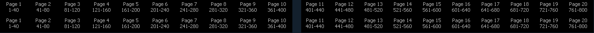
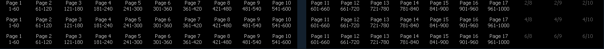

Element has a total of 1000 submasters. With the fader position switch in submaster mode, an Element 60 will display 60 submasters, and an Element 40 will display 40 submasters at a time. Element will default to the first 40 or 60 submasters. To page through the available submasters, hold down the {Page Subs} softkey in the Live display. The bump buttons will light up in green, and the bump buttons that correspond to the currently selected pages will flash. Press the corresponding bump button to go to that page. The fader ribbon will change to show the submaster pages.

There are 20 pages available on Element 40 for a total of 800 submasters
Note: Submasters 801-1000 can only be controlled by the keypad on Element 40.

There are 17 pages available on Element 60 for a total of 1000 submasters.